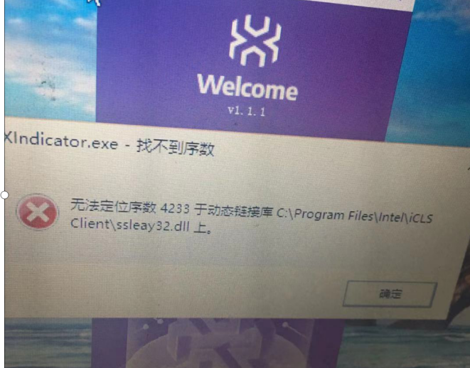
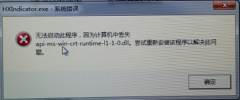
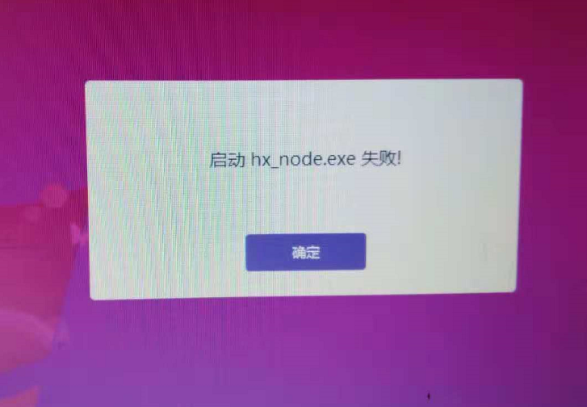
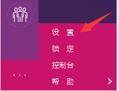
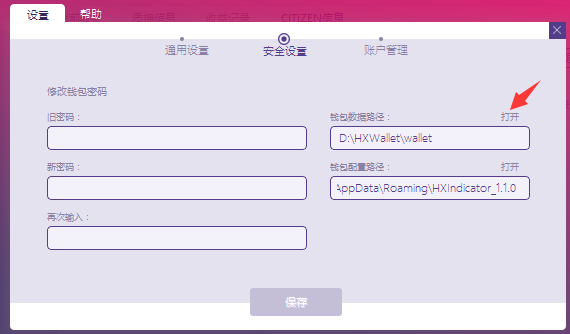
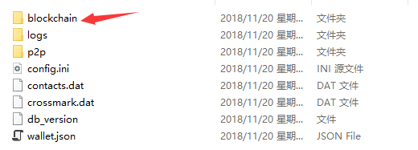
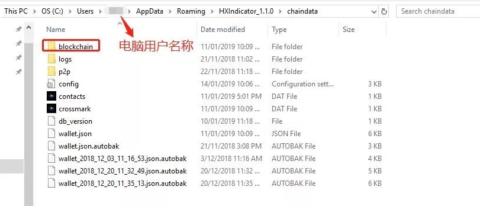
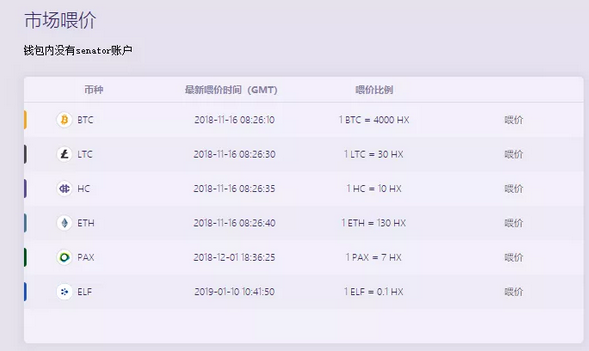

HX-Indicator使用问题¶
Q：HX-Indicator启动失败

A：关闭钱包，重新下载新版HX Indicator并覆盖原路径。然后重启钱包。
Q：缺少动态链接库

A：
关闭钱包，根据以下链接修复，并重启钱包。
https://blog.csdn.net/su749520/article/details/78984773
VC redit.exe下载
https://www.microsoft.com/zh-cn/download/details.aspx?id=48145
Q：钱包客户端数据同步问题及导致的一系列其他问题（1.1.1及之前版本）
- 区块高度一直显示1 无法同步
- HC资产不显示
- 报启动hxnode.exe失败之后，就再也无法正常连接网络
- 启动停止钱包慢的问题
- 区块0链接0偶尔能连上，但没用，不能创建账号
- 一直显示启动失败。
- 桌面钱包不稳定闪退或者断网，点击刷新不了数据。
- 重启后Loading时间长

A：选择设置菜单

选择“安全设置”页签，并点击“钱包数据路径”后面的 “打开”文字。

找到“blockchain”目录，删除到回收站。

重新下载新版HX Indicator并覆盖原路径。然后重启钱包。
Q：提示区块不同步
A：设置自动同步时间，确保本地时间正确
Q：资产划转不顺，会有分批到账的情况
A：暂未解决，尽量等资金到账后等一等再划转。
Q：每天释放的token总量
A：目前释放27HX/块，5秒一个块。可按此公式计算。
Q：怎么质押收益高，是权重高的好，还是持续出块的好。
A：这个目前没有统一的方法，需要具体模拟。最好不要质押极端值，比如权重最大的，或者最小的。同时结合出块率具体分析。
Q：权重与hx出块的计算方法是什么
A：请参考docs.hx.cash文档描述。权重跟出块概率线性一致。因为是概率，有可能在一小段时间内不符合权重。但长期看权重跟出块机会是一致的。同时Citizen本身的稳定性还会影响实际的出块数。
Q：充值HC到账时间？
A：正常需要8个区块确认时间到Tunnel账户，然后“划转”后等待4个区块到HX链上
Q：注册合约失败
A：注意不要把钱包放在有中文的目录下
Q：测试网络用户怎么使用
A：需要删除测试数据
Q：什么是HyperExchange (HX)？
A：HyperExchange (HX)是支持跨链技术和智能合约的新一代公链，同时具备链上自治功能，是Hcash旗下双链生态一环。通过跨链技术汇聚现有的数字资产到HX链，并通过图灵完备的智能合约实现复杂的业务逻辑。是天然的去中心化交易所底层平台，也是所有数字货币金融衍生品的天然基础平台。
Q：HyperExchange (HX) 与HyperCash (HC) 的关系是什么?
A：HCASH使用的是并生双链的生态模式，由原有的Hshare链升级后的主链HyperCash(HC)和由HCASH孵化出的HyperExchange(HX) 主链组成。HC负责抗量子签名、强隐私保护、去中心化共识，HX负责跨链功能、去中心化交易所、Dapp、智能合约等。
Q：HX总量是多少，怎么分配？
A：总量9.8亿，第一年将挖出1.7亿，第二年将挖出1.6亿，以此类推，预计7-8年挖完。所有HX币均由用户质押挖矿所得。
Q：HX官网地址是什么？
Q：HX链上质押资产多少？怎么查？
A：有关HX链上的质押资产，转账信息等一般性问题，都可以在HX区块浏览器上查看。 HX区块浏览器地址：http://explorer.hx.cash
Q：如何获得HX？
A：目前有两种方法可以获得HX，一是在HX钱包中挖矿，二是在交易所购买。 目前支持HX挖矿的手机钱包有：
- Anybit（http://hx.cash/），
- Hoo（https://hoo.com/），
-
HyperPay（https://h.cash/）， 目前支持HX挖矿的电脑钱包有：
-
HX Indicator（http://hx.cash/）；
目前支持HX的交易所有：
目前HX已经在Be.top, ExCraft, QBTC, Coinw（目前支持HPY钱包产生的币进Coinw交易）等交易所上线，其他交易所也在陆续支持中。Hoo钱包支持兑换，AnyBit也会尽快支持撮合交易。
Q：持有HX有分红吗？怎么分？
A：持有10000以上HX的用户，无论资产是否在质押，都可以获得HX链上的分红，分红周期是每十万区块高度分红一次。
注意：AnyBit由于目前分红较少，尚不足以支付手续费，因此未开通，后期会开通分红领取功能。
Q：HX挂单中心的K线、深度等红绿条什么时候能出来？
A：开发正在进行中，希望能够尽早推出此功能。同时网页钱包的相关开发也在进行中。
Q：区块高度停止，关闭软件经常未响应，只能强制关闭进程，node停止，现在不能正常打开HX Indicator，要怎么办？
A：这是因为后台卡死。请删除blockchain文件夹，并打开HX Indicator重新同步。我们之后会逐渐改进此问题，尽量避免为用户造成不便。 一般情况下blockchain文件夹路径：

注意：请在大笔转账之后及时备份钱包，并保管好备份。删除blockchain文件夹时，请不要改动其他任何文件。
Q：目前HX支持哪些币种的质押挖矿？
A：目前支持HC, BTC, ETH, LTC, PAX, ELF质押挖矿获得HX，其他币种会陆续上线。
Q：HX白皮书在哪？
A：官方技术文档与HX白皮书作用的等同。 地址：http://docs.hx.cash/zh/
Q：什么是HIOU？
A：HIOU是指HyperExchange上对应锚定的其他资产链数字资产。例如HXBTC指HyperExchange上对应锚定的比特币资产。
Q：什么是喂价？
A：每个Senator都有义务通过共识对HIOU进行喂价。喂价是指由Senator根据现行交易所的实时价计算出所有HIOU:HX的汇兑比例，然后分别进行喂价。喂价的最终结果值为所有Senator喂价去掉最高值和最低值，剩下的取平均数。喂价只会影响Citizen竞争出块时的权重。

Q：PAX转交易所怎么不到账？
A：目前不仅仅是PAX，ETH系的币交易所目前都没有支持多签地址转账。以PAX为例，用户需要先跨链将PAX转出至PAX原链，然后才能进行转去交易所交易。（建议先提到AnyBit钱包地址，然后进行转出操作。）
Q：HX链上币是锁仓吗？我们的币能不能随时转到原生链？
A：所有链上资产都是可以及时转出到原生链的，但是Senator选举结束前，晚上和周末可能不会及时被签名，需要注意。
Q：HX链上地址币越来越多说明什么？
A：说明HX这条链受到的关注越来越高，共识逐渐增强。